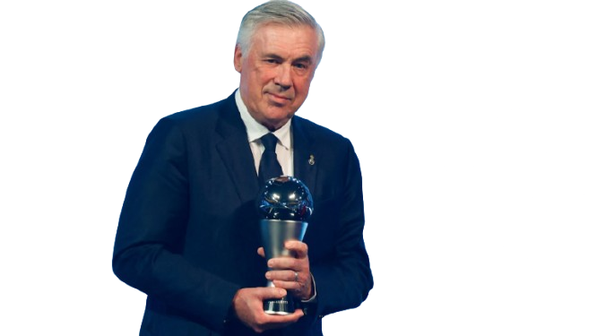
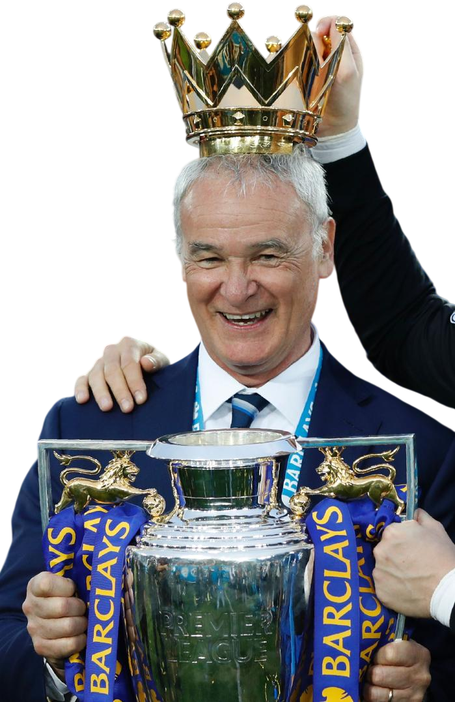
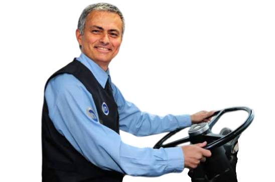

MHL Legacy Archive
L'archivio della MHL dove campioni, record e leggende vengono custoditi stagione dopo stagione.
Legends are built, not bought.
🏛️ MHL Legacy Awards
Premi individuali assegnati a fine stagione per riconoscere il valore manageriale, lo scouting e la capacità di costruire una squadra vincente. Ogni premio assegna Legacy Credits utilizzabili nella stagione successiva.

🏆 Ancelotti Manager Award
Campione MHL
La vetta della Mantra Heritage League.
Premia l'allenatore che, attraverso scelte, strategia e continuità,
riesce a conquistare il titolo e a scrivere il proprio nome
nella storia della competizione.
🌱 Gasperini Scouting Award
Miglior talento scoperto
Premia l'allenatore capace di individuare e valorizzare
un giovane talento del vivaio prima della sua consacrazione.
Il riconoscimento celebra scouting, intuizione e capacità
di costruire valore nel tempo.

⭐ Ranieri Miracle Award
Rivelazione dell'anno
Premia il giocatore che ha superato maggiormente
le aspettative iniziali, trasformandosi da scommessa
a protagonista della stagione.
⚽ Zemanlandia Award
Miglior attacco
Assegnato alla squadra con il maggior numero di gol realizzati
durante il campionato.
Celebra una filosofia offensiva basata su coraggio,
qualità e capacità di trasformare le occasioni in risultati.

🛡️ Mourinho Park The Bus Award
Miglior difesa
Riconosce la squadra con il minor numero di gol subiti
nel corso della stagione.
Premia organizzazione, equilibrio tattico e capacità
di rendere la propria squadra difficile da superare.
📊 Criteri di assegnazione
🌱 Gasperini Scouting Award
Il premio valuta la capacità di individuare un talento prima della sua esplosione.
- 💰 Investimento iniziale: rapporto tra crediti spesi e valore prodotto
- 📈 Crescita: aumento della quotazione durante la stagione
- ⚽ Rendimento: punti fantacalcio, gol, assist e bonus
⭐ Ranieri Miracle Award
Premia il giocatore con il miglior rapporto tra aspettative iniziali e rendimento reale.
- 📋 Aspettative: quotazione, ruolo e rendimento previsto
- 🔥 Esplosione: differenza tra valore atteso e rendimento ottenuto
- 📊 Impatto: bonus prodotti e influenza sulla squadra
Un giocatore acquistato a pochi crediti che diventa decisivo ha più valore rispetto ad un top player che conferma semplicemente le attese.
Gli MHL Legacy Awards premiano il valore manageriale, non solo il risultato finale. La valutazione finale spetta all'admin MHL sulla base dei criteri indicati.
📜 MHL Records & History
L'albo storico della Mantra Heritage League. Ogni stagione celebra i campioni, i vincitori delle coppe e gli allenatori che hanno scritto la storia della competizione.
🏟️ Season 2026/27
MHL Championship
Campione della stagione
MHL Heritage Cup
Vincitore Coppa MHL
MHL Last Man Standing
Vincitore Highlander
Ancelotti Manager Award
Miglior Manager dell'anno
Gasperini Scouting Award
Miglior talento scoperto
Zemanlandia Award
Miglior attacco della stagione
Mourinho Park The Bus Award
Miglior difesa della stagione
Ranieri Miracle Award
Rivelazione dell'anno